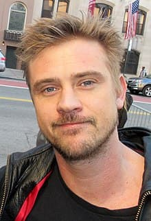
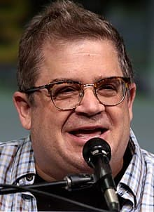

The Sandman (TV series)
The Sandman is an American fantasy drama television series based on the 1989–1996 comic book written by Neil Gaiman and published by DC Comics. The series was developed by Gaiman, David S. Goyer, and Allan Heinberg for the streaming service Netflix, and is produced by DC Entertainment and Warner Bros. Television. Like the comic, The Sandman tells the story of Dream / Morpheus, the titular Sandman. The series stars Tom Sturridge as the title character, with Boyd Holbrook, Vivienne Acheampong, and Patton Oswalt in supporting roles. Efforts to adapt The Sandman to film began in 1991, and floundered in development hell for many years. In 2013, Goyer pitched a film adaptation of the series to Warner Bros. Goyer and Gaiman were set to produce alongside Joseph Gordon-Levitt, who was planned to star and possibly direct. However, Gordon-Levitt exited over creative differences in 2016. Due to the prolonged development of the film, Warner Bros. shifted its focus to television. Netflix signed a deal to produce the series in June 2019, and filming lasted from October 2020 to August 2021. The Sandman premiered on August 5, 2022, with a further episode premiering on August 19. It received generally positive reviews from critics, with praise going towards the casting, production design, costumes, faithfulness to its source material, visual effects, and performances, particularly those of Sturridge and David Thewlis.
Premise
Morpheus, the personification of dreams and one of the seven Endless, is captured in an occult ritual in 1916. After being held captive for 106 years, Dream escapes and sets out to restore order to his realm, The Dreaming.[5]
Cast
Main

Tom Sturridge as Dream / Morpheus, the personification of dreams and nightmares, and the ruler of the Dreaming.
Boyd Holbrook as the Corinthian, a nightmare who escaped the Dreaming.

Vivienne Acheampong as Lucienne, the librarian of the Dreaming, and its caretaker in Dream's absence.
Patton Oswalt as the voice of Matthew the Raven, Dream's emissary.
Co-starring
- David Thewlis as John Dee, Cripps's and Burgess's son, whose endeavor to find "truth" jeopardizes the world. Gaiman described Dee as a character "who could break your heart and keep your sympathy while taking you into the darkest places"
- Jenna Coleman as Johanna Constantine, an occult detective. Coleman plays two versions of the character: the present day descendant based on John Constantine, and her identical eighteenth century ancestor Lady Johanna Constantine.
- Gwendoline Christie as Lucifer Morningstar, the ruler of Hell. This series' incarnation of Lucifer is much closer to the character's original depiction in the comics than his depiction in the 2016 Lucifer television series. Neil Gaiman noted that it would be difficult to reconfigure the Lucifer version, portrayed by Tom Ellis, so he would fit back into The Sandman.
- Kirby Howell-Baptiste as Death, the personification of death and Dream's kinder, wiser sister.
- Ferdinand Kingsley as Hob Gadling, Dream’s friend who has lived for hundreds of years.
- Sandra James-Young as Unity Kinkaid, Rose's benefactor and great-grandmother who has recently awakened from a century-long slumber.
- Kyo Ra as Rose Walker / The Vortex, a young woman searching for her lost brother who becomes a prey of the Corinthian.
- Razane Jammal as Lyta Hall, Rose's friend and a widow mourning her husband.
- Melissanthi Mahut as Calliope, Homer's muse, and ex-wife of Morpheus / Dream.
- Arthur Darvill as Richard "Ric" Madoc, a struggling author who imprisons Calliope against her will.
Episodes
| No. | Title | Directed by | Teleplay by | Original release date |
|---|---|---|---|---|
| 1 | "Sleep of the Just" | Mike Barker | Neil Gaiman & David S. Goyer & Allan Heinberg | August 5, 2022 |
While attempting to apprehend a nightmare known as the Corinthian, Morpheus, also known as Dream, is captured in an occult ritual by British aristocrat Roderick Burgess, who was attempting to capture Death. Roderick steals Morpheus's totems of power: his helm, a pouch of sand, and a ruby; all of which are eventually taken by Roderick's resentful lover Ethel Cripps, who is pregnant with Roderick's child. Morpheus's imprisonment causes an epidemic of "sleepy sickness" which lasts for 106 years. In 2021, Roderick's son, Alex, is an old man who continues to keep Morpheus imprisoned and is cared for by his partner, Paul. After Paul "accidentally" erases part of the runes keeping Morpheus bound, Morpheus reaches into the dream of one of his guards to destroy his cage, allowing him to escape, condemning Alex to an eternal sleep.
| No. | Title | Directed by | Teleplay by | Original release date |
|---|---|---|---|---|
| 2 | "Imperfect Hosts" | Jamie Childs | Allan Heinberg | August 5, 2022 |
Morpheus returns to the Dreaming, his kingdom and the source of dreams. There, he finds his palace in ruins due to his prolonged absence. Morpheus visits Cain and Abel, a pair of dysfunctional brothers, to retrieve their pet gargoyle Gregory, which will restore his power enough to summon the Fates. Morpheus successfully summons the Fates who inform him of the whereabouts of his equipment; the pouch of sand is in the possession of exorcist Johanna Constantine, his helm in the hands of a demon in Hell, and the ruby used by Ethel's son John Dee. Morpheus sets off on his quest to retrieve his items with assistance from his advisor Matthew the Raven. Back in the Dreaming, Morpheus sends a baby gargoyle to Cain and Abel to replace their previous companion.